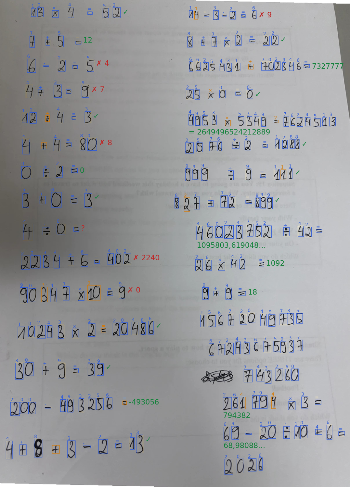
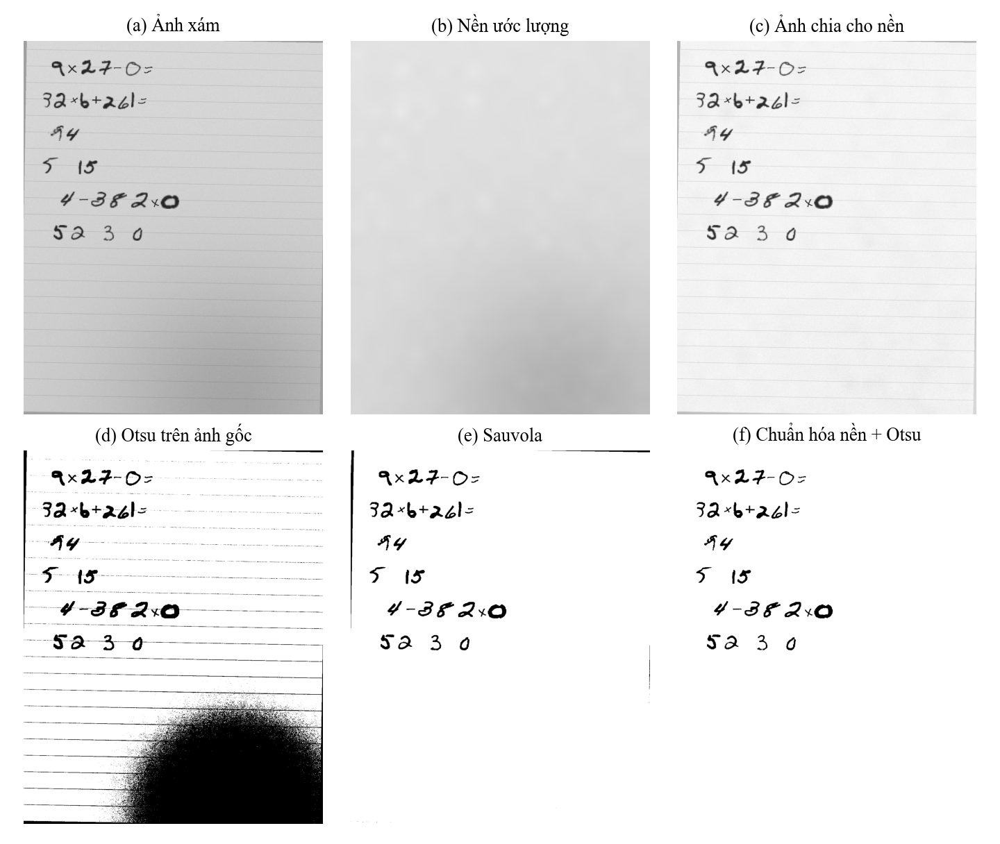
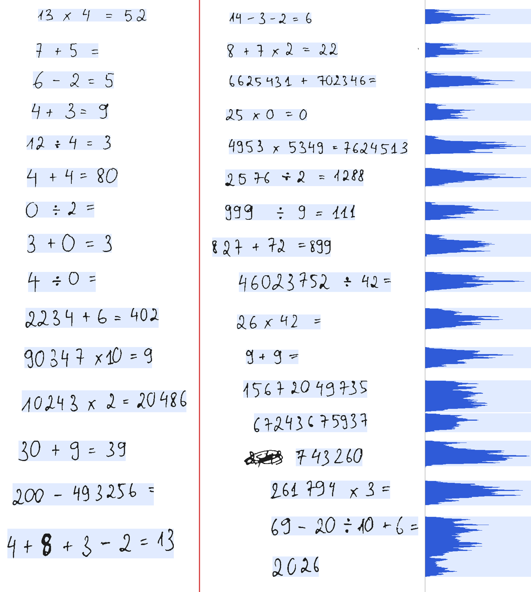
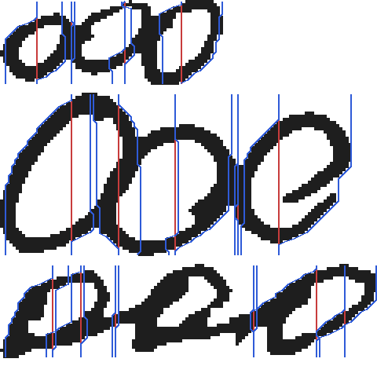
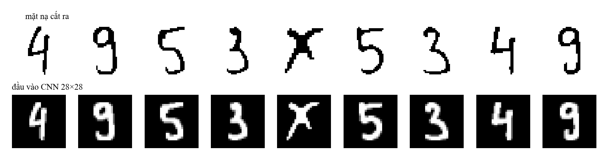
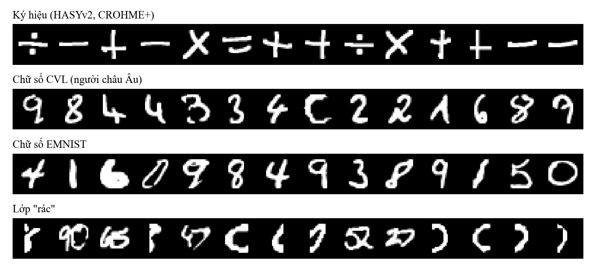
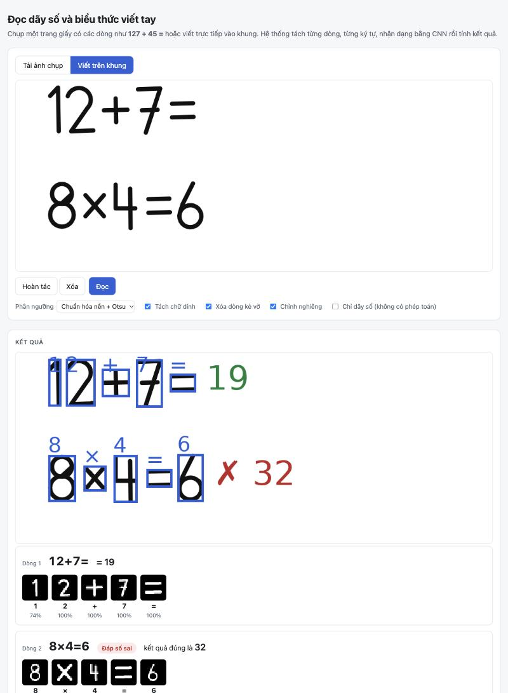

Bài tập lớn · Xử lý ảnh · Nhóm 13
Giảng viên: Phạm Hoàng Việt · Nhóm lớp 05
01 · Bài toán

02 · Thách thức
Bóng tay, góc tối, giấy ngả màu, mực in mặt sau thấm qua
Dòng chữ lệch vài độ, dễ gộp nhầm hai dòng
Đường kẻ dài cắt ngang qua nét chữ
Các chữ số nối liền nhau thành một khối
Mỗi dòng ngang chứa hai phép tính
Chỗ viết sai bị tô đè, không phải ký tự
03 · Tổng quan
Mọi thuật toán xử lý ảnh nhóm tự cài bằng NumPy · CNN bằng PyTorch
04 · Tiền xử lý

05 · Tiền xử lý
Thử góc −5°…5°, chọn góc làm biểu đồ chiếu ngang nhọn nhất
Bỏ đoạn chạy ngang dài ≥ 25% bề rộng (phép mở với phần tử 1×L), rồi phép đóng 3×3 nối nét
Hai lượt trên đoạn chạy + hợp–tìm (union–find): trang thật 50.688 điểm nét chỉ còn 3.200 đoạn, nhanh hơn BFS khoảng 3–4 lần
06 · Tách ký tự

07 · Tách ký tự
Hai nhóm chồng ngang ≥ 50% và nằm trên–dưới nhau hoặc một nhóm rất dẹt
Hai nhóm sát nhau, ghép lại vẫn hẹp: ghép nếu CNN chấm ký tự ghép cao hơn
Đếm lỗ kín trong nhóm nét: chữ số ≤ 3 lỗ, gạch xóa ≥ 6 lỗ
08 · Tách ký tự

09 · Nhận dạng

Chỉ lấy nét của ký tự đó
w ≈ 2A/P; giãn hoặc co về 2,7 px
Cạnh dài 20 px, dấu trừ vẫn là vạch mảnh
Dùng chung cho dữ liệu huấn luyện và lúc đọc
10 · Nhận dạng
2 lớp tích chập · 57 nghìn tham số
4 lớp tích chập + BatchNorm · 469 nghìn tham số

11 · Thực nghiệm
MNIST + ký hiệu
+ tăng cường, biến thể tự vẽ
+ chữ số CVL thật
+ lớp "rác"
+ mạng lớn, EMNIST
Ghép hai mạng
CVL Digit Strings · 744 dãy viết tay của 75 người không có trong huấn luyện
Lưu ý: quy tắc chọn mô hình đã sửa một lần sau khi xem điểm test này, nên con số cuối có thể hơi lạc quan
12 · Thực nghiệm
| Cấu hình | CVL 518 dãy* | 90 dãy sạch | Ảnh thật** |
|---|---|---|---|
| Đầy đủ | 68,3% | 40 | 28 |
| Otsu thay chuẩn hóa nền | 68,3% | 40 | 0 |
| Sauvola thay chuẩn hóa nền | 50,6% | 30 | 1 |
| Không tách cột | 68,3% | 40 | 0 |
| Không tách chữ dính | 41,7% | 19 | 25 |
| Chỉ cắt thẳng (bỏ drop-fall) | 64,7% | 37 | 28 |
| Không chuẩn hóa độ dày nét | 65,4% | 36 | 28 |
| Không gộp mẩu nét đầu dòng | 66,2% | 37 | 28 |
| Không bỏ vết gạch xóa | 68,5% | 41 | 27 |
* 43/52 người viết của tập này có chữ số trong dữ liệu huấn luyện: chỉ nên so chênh lệch giữa các dòng; cột 90 dãy là 9 người hoàn toàn mới.
** Một trang của một người, đã dùng khi phát triển.
Phép đóng 3×3 lấp khe của dấu ÷ (thành +) và dấu = (thành 2)
Bỏ phép đóng: ảnh thật 30/32, trang tổng hợp 77,5% → 81,1%
nhưng CVL 518 dãy giảm 68,3% → 66,6%; trang thật đã dùng khi phát triển nên chưa đủ để đổi mặc định. Nay bật/tắt được trên giao diện.
13 · Kết quả
dòng đúng hoàn toàn
biểu thức đúng giá trị
lỗi ký tự
14 · Demo

15 · Kết luận
Bài học: tách nền, tách ký tự quyết định nhiều hơn tinh chỉnh mạng · luôn đánh giá trên chữ viết thật
Nhóm 13 · Xử lý ảnh
Mời thầy và các bạn đặt câu hỏi